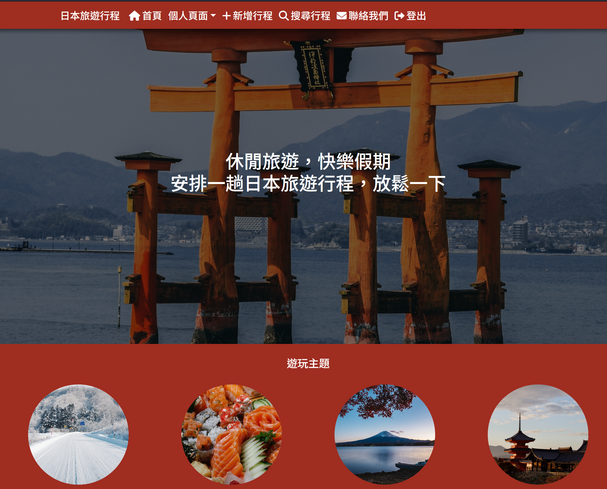
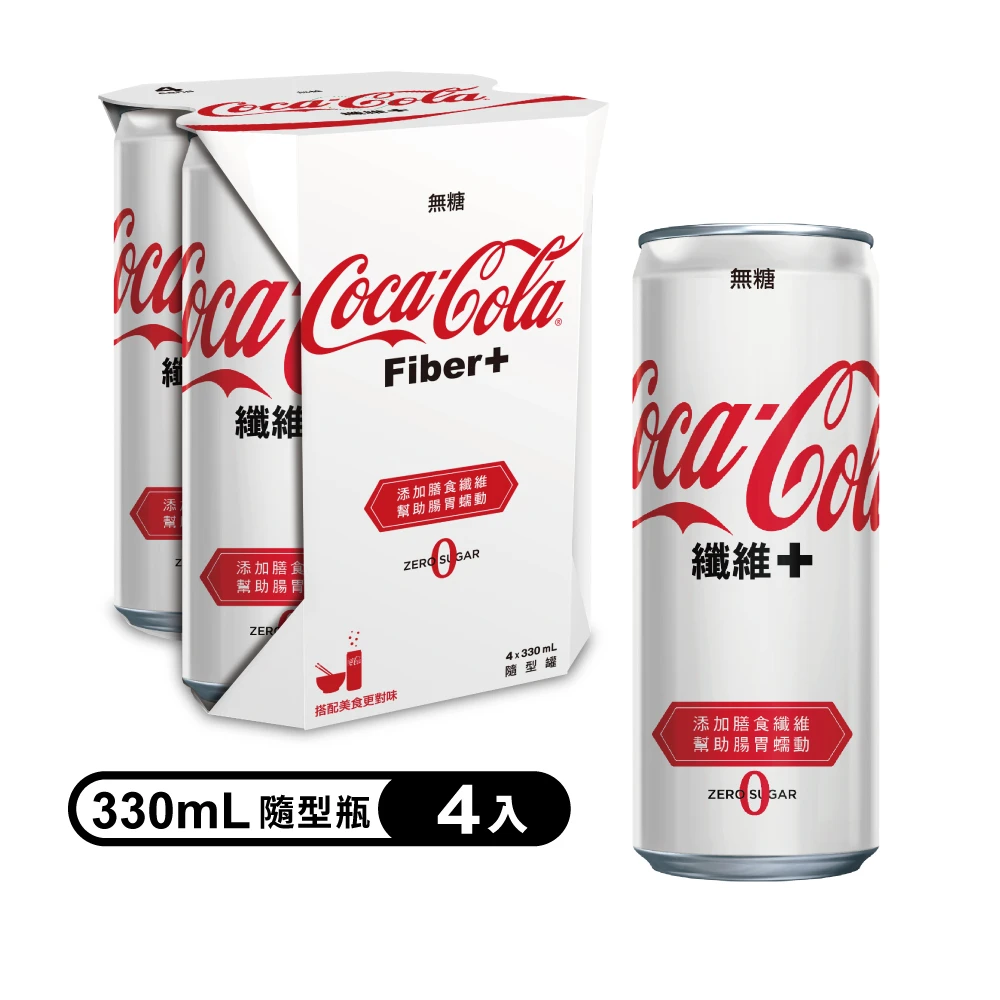

日本旅遊行程規劃
網頁架構 :
使用React.js作為前端框架，Express、MongoDB、Node.js作為後端服務完成的項目，也就是常見的MERN項目。
樣式主要套用了Bootstrap。也用到了Passport套件來驗證使用者的json
web token，以及用bcrypt來加密使用者的密碼。
設計發想與使用說明 :
我本人一直有想找時間去日本旅遊的想法，但是也僅限於想想...
之所以會想去日本，是因為我對ACG的興趣。然而不管是遊戲、小說或者漫畫，我都是收藏數位版為主，
所以其實也只是嚮往去一趟日本，始終沒有真正開始出遊計畫。
如果真的要去，也會因為自己對那些旅遊熱門景點沒有興趣。
我不想逛名勝古蹟、也對美食不感興趣。
只想集中在那些能滿足自己ACG興趣的地點，導致網路上很多的旅遊計畫無法作為參考。
於是就想著能不能把行程計畫拆成一個一個的「點」，分別列出預算，讓人可以自選感興趣行程，自行拼湊，就像自助餐一樣。最終完善自己的計畫。
所以這個網站可以讓使用者發布行程，不管是提問、或者供人參考，其他使用者可以對行程發表留言，並點讚收藏。
因為是使用render的免費託管，所以一段時間未使用會進入休眠，敬請見諒。測試可使用test關鍵字搜尋，找到我用chatGPT生成的範例。

圖片收藏
一個搜尋圖片並收藏的網頁
網頁架構 :
這個網站使用React作為其前端框架，並連接到Pexels.com
API作為其後端數據庫。
使用firebase來完成Google登入驗證。收藏頁面需要用戶登入後才能訪問。
由於這個網站沒有連接其他資料庫，所以收藏的資訊，即pexels的圖片id將會保存在用戶的本機儲存空間。
因此即使用戶不登入，也能使用收藏功能，只是無法訪問收藏頁面。

關於我
我是謝承曄，畢業於國立臺灣師範大學的公民教育與活動領導學系。因為科系名稱容易讓人一頭霧水，所以我簡短說明一下。這個
科系主要是培養公民老師為主，也是多數畢業生選擇的職業方向。但是因為學習內容涵蓋經濟、法律，所以也有不少畢業生選擇投入金融產業，或者
考取公職。
在求學期間，我修的主要都是法律科目，所以在畢業後，第一份從事的工作就是公職人員。約兩年的工作經歷（其中有四個月留職停薪服兵役），
工作內容穩定，穩定到兩年時間每天都在做一樣的事情。雖然單位是在台北市中正區，但實際是在土城區一處偏僻大樓上班，會去那裡的多半是等待
退休的人員，我一個大學剛畢業的人被分配去那，且一待就是兩年，沒有調動跡象，可以說是一個未解之謎。
由於我負責業務是新收檔案管理，所以被分配到一個單獨樓層辦公，等於是一個人有將近20坪的辦公室（其實那個區域放八個Ｌ型辦公桌仍還有很大空間）。
按理說單純的人際關係與工作內容，對我來說應該沒什麼好挑剔的，然而在工作兩年後，我仍然選擇離職。
人只要活著就能成就什麼吧？然而活著就只是活著。兩年的時間過去，發現自已與過去沒什麼不同，未來也將如此時，不由得突然感到恐慌。
於是我開始整理自己的人生。
首先，我喜歡遊戲，喜歡研究遊戲的機制與關卡的設計，我想要做一個屬於自己的遊戲。萬幸的是在當兵期間認識了一群有同樣興趣的朋友，可以一起努力。
當然我不指望完全靠此維生，只是當成人生的side
project。我自己可以做策畫與編劇，當然也必須學習程式才行（有鑑於Unity近期的收費風波，可能要選擇其他開發引擎了）。
但是人畢竟要吃飯的，我也必須工作才行。在工作期間，我們使用的是web-based
Application，基於工作需要，我也經常有與開發商接洽的機會，也開始對行業產生了興趣。對於一個想轉換工作跑道，
又是一個程式語言零基礎但是有學習需求的人來說，這或許是不錯的選擇。
所以我嘗試著自學網頁開發，上面的作品就是我三個月努力的結果。
因為我非常喜歡可口可樂纖維+這個飲料，相較原版喝起來，喉嚨感覺更舒適，也不會那麼甜膩。
而易拉罐版本更是心頭好，開罐後能在氣量風味最佳的時刻喝完。寶特瓶裝就有點太多，沒有在一定時間喝完，氣泡就不那麼綿密了。
這也是我配色大多採用紅白配色的緣由。不過可口可樂的紅色在螢幕上有點太亮，所以我調整成比較暗的紅色。
網頁封面是我玩stable
diffusion算出來的圖，覺得效果還行。我本人頭大不上鏡，所以不好意思放自己的大頭。
聯絡我
email : siechengye@gmail.com